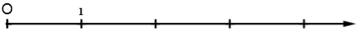
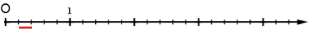
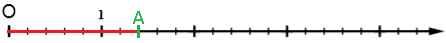

Chapitre 6 : Les fractions - Partie 1
I. Écriture fractionnaire
1) Partage
Exemple : On a divisé un rectangle en 7 parties égales puis colorié 3 de ces parties :
La partie coloriée représente 3/7 (trois septième) du rectangle.
On remarque que :
3/7 = 1/7 + 1/7 + 1/7 = 3 × 1/7
2) Vocabulaire
Définition : Pour la fraction 3/7
- 3 est le numérateur (du latin numerator = celui qui compte)
- 7 est le dénominateur (du latin denominator = celui qui nomme, ici des septièmes)
⚠ Attention : il faut forcément que les parties soient identiques !
La partie hachurée du disque ne correspond pas à 3/7 du disque car les 7 parts ne sont pas égales.
II. Fraction et nombres
Définition : Soient a et b deux nombres entiers avec b ≠ 0.
La fraction a/b est le quotient de a par b : a/b = a ÷ b
Exemples :
- 1/2 ; 1/4 ; 2/9 ; 14/3 sont des fractions.
- 2,1/5 n'est pas une fraction car 2,1 n'est pas un nombre entier.
- 1/10 ; 3/100 ; 47/1 000 sont des fractions décimales.
⚠ Attention : Certaines fractions ne possèdent pas d'écriture décimale.
Par exemple : 1/3 = 1 ÷ 3 = 0,333333...
Mais on peut toujours en donner une valeur approchée : 1/3 ≈ 0,33
III. Quotients égaux
Observation :
On a colorié 1/2, puis 2/4, puis 4/8 - les trois parties coloriées sont identiques.
1/2 = 2/4 = 4/8
Propriété fondamentale : On ne change pas la valeur d'une fraction si on multiplie (ou si on divise) le numérateur et le dénominateur par un même nombre non nul.
Exemples :
- 2/7 = (2×5)/(7×5) = 10/35
- 18/28 = (18÷2)/(28÷2) = 9/14
⚠ Attention : Cette règle ne s'applique pas à l'addition et à la soustraction.
3/4 ≠ (3+5)/(4+5)
En effet : 3/4 = 0,75 et (3+5)/(4+5) = 8/9 ≈ 0,9
IV. Fractions et demi-droite graduée
Définition : Pour placer une fraction sur une droite graduée, on partage l'unité en autant de parties égales qu'indique le dénominateur, puis on reporte le nombre de parts indiqué par le numérateur.
Exemple : Placer A(7/5) sur cette demi-droite graduée.
Étape 1 : On partage l'unité en 5 parties égales. Chaque écart représente 1/5

Étape 2 : On reporte 7 fois la longueur du cinquième de l'unité.


On observe que : 7/5 = 7 × 1/5 = 1 + 2/5
V. Comparaison de fractions
1) Mettre des fractions au même dénominateur
Méthode : Pour comparer deux fractions, on peut les mettre au même dénominateur en utilisant la propriété fondamentale des fractions.
Exemple 1 : Mettre au même dénominateur les fractions 3/4 et 2/5.
On cherche un dénominateur commun. On peut utiliser le produit des dénominateurs : 4 × 5 = 20
- 3/4 = (3×5)/(4×5) = 15/20
- 2/5 = (2×4)/(5×4) = 8/20
Les deux fractions sont maintenant au même dénominateur : 15/20 et 8/20
Exemple 2 : Mettre au même dénominateur les fractions 5/6 et 7/9.
On cherche un dénominateur commun. Ici, on peut remarquer que 18 est un multiple de 6 et de 9 (car 6 × 3 = 18 et 9 × 2 = 18).
- 5/6 = (5×3)/(6×3) = 15/18
- 7/9 = (7×2)/(9×2) = 14/18
2) Comparer les fractions
Propriété : Pour comparer deux fractions qui ont le même dénominateur, on compare leurs numérateurs.
Exemple : Comparer 3/4 et 2/5.
Étape 1 : On met les fractions au même dénominateur (voir exemple précédent) :
- 3/4 = 15/20
- 2/5 = 8/20
Étape 2 : On compare les numérateurs : 15 > 8 donc 15/20 > 8/20
Conclusion : 3/4 > 2/5
Astuce : Pour comparer rapidement des fractions avec 1 :
- Si le numérateur est inférieur au dénominateur, la fraction est inférieure à 1. Exemple : 3/5 < 1
- Si le numérateur est égal au dénominateur, la fraction est égale à 1. Exemple : 7/7 = 1
- Si le numérateur est supérieur au dénominateur, la fraction est supérieure à 1. Exemple : 11/8 > 1
3) Encadrer une fraction par deux entiers consécutifs
Méthode 1: Pour encadrer une fraction par deux entiers consécutifs, on divise le numérateur par le dénominateur pour trouver entre quels entiers se trouve le quotient.
Exemple : Encadrer 7/3 par deux entiers consécutifs.
On effectue la division : 7 ÷ 3 ≈ 2,33...
Le quotient est compris entre 2 et 3.
Donc : 2 < 7/3 < 3
Méthode 2 : On peut aussi encadrer une fraction en cherchant des multiples du dénominateur.
Exemple : Pour encadrer 23/5, on cherche les multiples de 5 qui encadrent 23 :
On sait que 4 × 5 = 20 et 5 × 5 = 25
Donc 20/5 < 23/5 < 25/5
Ainsi 4 < 23/5 < 5